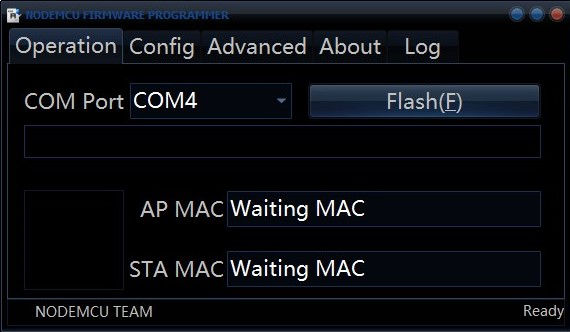
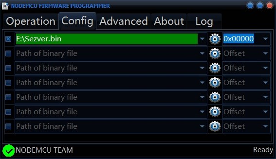
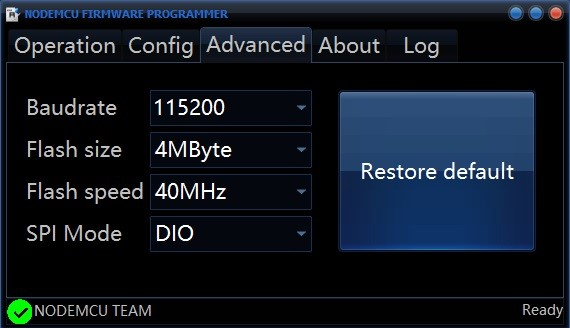
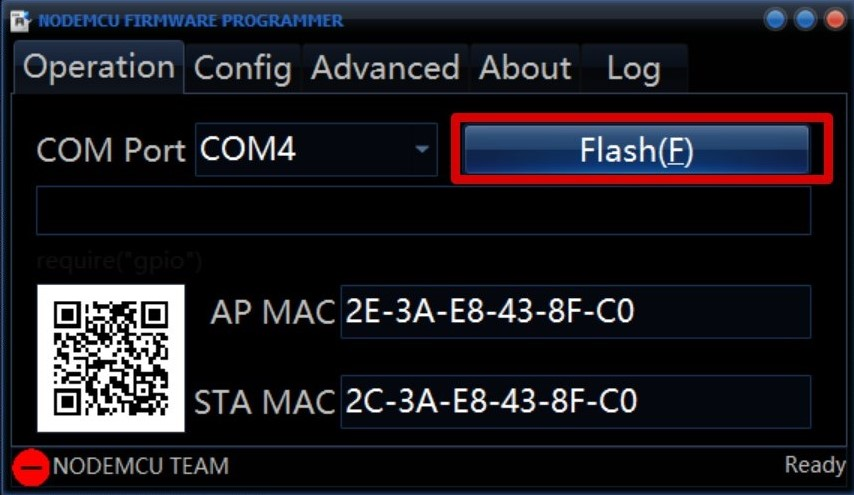
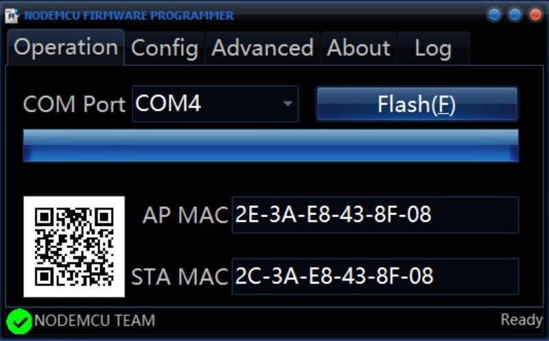

BẠN CẦN PHẢI TẢI DRIVER CHO ESP VÀ PHẦN MỀM NẠP ONLINE
- Driver cho máy tính
CP210X Tải Xuống.
CH340 Tải Xuống.
- ESP8266 Flash Tools
Windows (32bit) Tải Xuống.
Windows (64bit) Tải Xuống.
- Phần mềm nạp Reset.bin Tải Xuống ( Để reset ESP về ban đầu )
- Phần mềm nạp Server.bin Tải Xuống
Sau khi cài Driver cho máy tính rồi bạn mở chương trình ESP8266Flasher.exe

Chọn vào "Config" - sau đó bấm vào bánh răng giống như hình bên dưới. Tìm đến nơi bạn vừa tải xuống và chọn file Server.bin .

Chọn vào "Advanced" - để thông số biên dịch như hình.

Chọn vào "Operation" - sau đó bấm vào cổng COM, chọn COM của bạn.
Bấm vào FLASH giống như hình bên dưới

Chờ chương trình nạp xong và hiển thị dấu tích màu xanh giống như hình bên dưới là xong.

Sau khi nạp xong, bạn rút ra cắm lại ESP và truy cập vào WiFi: ESPSV do thiết bị phát ra.
Trong trường hợp điện thoại của bạn không tự động liên kết tới trang thiết lập, bạn mở trình duyệt web vào chế độ riêng tư (còn gọi là chế độ ẩn danh) rồi truy cập 1.2.3.4
Tiếp theo bạn nhấn vào mạng WiFi của nhà bạn
 Lúc này bạn chỉ cần nhập mật khẩu WiFi rồi nhấn "Kết Nối". Thiết bị sẽ tự kết nối về sever
Lúc này bạn chỉ cần nhập mật khẩu WiFi rồi nhấn "Kết Nối". Thiết bị sẽ tự kết nối về sever
 Bạn nhắn tin cho mình qua Facebook: Tùng Nguyễn để mình xét duyệt thì mạch của bạn mới tự nạp code
Nếu bạn nạp không nhắn mình thì mạch của bạn cũng không có tác dụng gì đâu nhé
Đối với những khách hàng trước đó đã nạp của bên mình sẽ được nạp bản mới free
Mình nhận nạp thuê với 1 bản firmware
Bạn nhắn tin cho mình qua Facebook: Tùng Nguyễn để mình xét duyệt thì mạch của bạn mới tự nạp code
Nếu bạn nạp không nhắn mình thì mạch của bạn cũng không có tác dụng gì đâu nhé
Đối với những khách hàng trước đó đã nạp của bên mình sẽ được nạp bản mới free
Mình nhận nạp thuê với 1 bản firmware
- Firmware 6.7 . 50k
+ Ngắt Kết Nối
+ Tự Động Ngắt Kết Nối
+ Lấy mật khẩu
+ Kích sóng sau khi lấy được mật khẩu
+ Tạo WiFi ảo nếu người dùng ấn vào link ra trang nhập tài khoản: Facebook, Google, Twitter, Garena, TikTok.
Liên hệ Facebook: Tùng Nguyễn